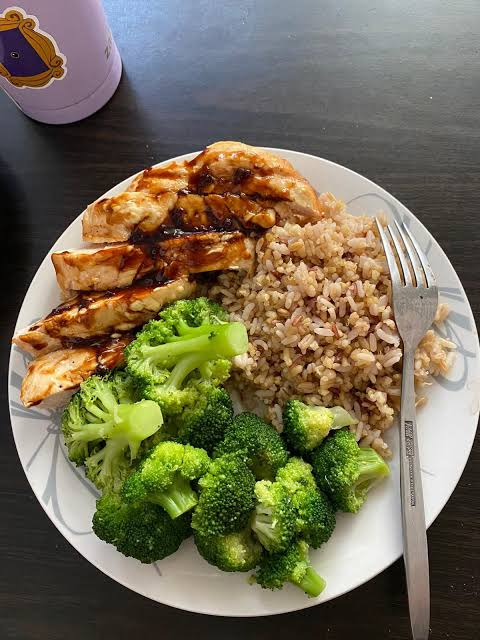

Cooking is one of the most useful life skills anyone can learn. Besides saving money, it allows you to prepare healthier meals, impress your friends and family, and express your own creativity.
Cooking, also known as cookery, uses heat to make food more palatable, digestible, nutritious, and safe. Cooking methods vary widely around the world, from grilling food over an open fire to baking, boiling, frying, and steaming. Every culture has developed its own unique traditions and recipes.
Preparing food with fire is an activity unique to humans. Archaeological evidence suggests that humans have been cooking for hundreds of thousands of years. Cooking allowed people to obtain more nutrition from food and helped civilizations grow.
As technology and trade developed, people gained access to new ingredients, cooking tools, and recipes. Today, cooking combines traditional techniques with modern technology, allowing anyone to learn and experiment in the kitchen.


If you are new to cooking, try starting with these simple dishes:
Interested in learning even more about cooking? Visit the Wikipedia Cooking Page .
Cooking is much more than simply making food. It is a valuable life skill that saves money, brings people together, and encourages creativity. No matter your age or experience, anyone can become a better cook through practice.